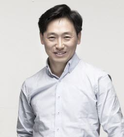
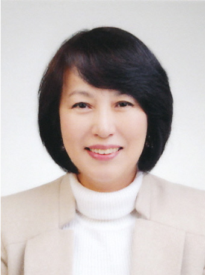
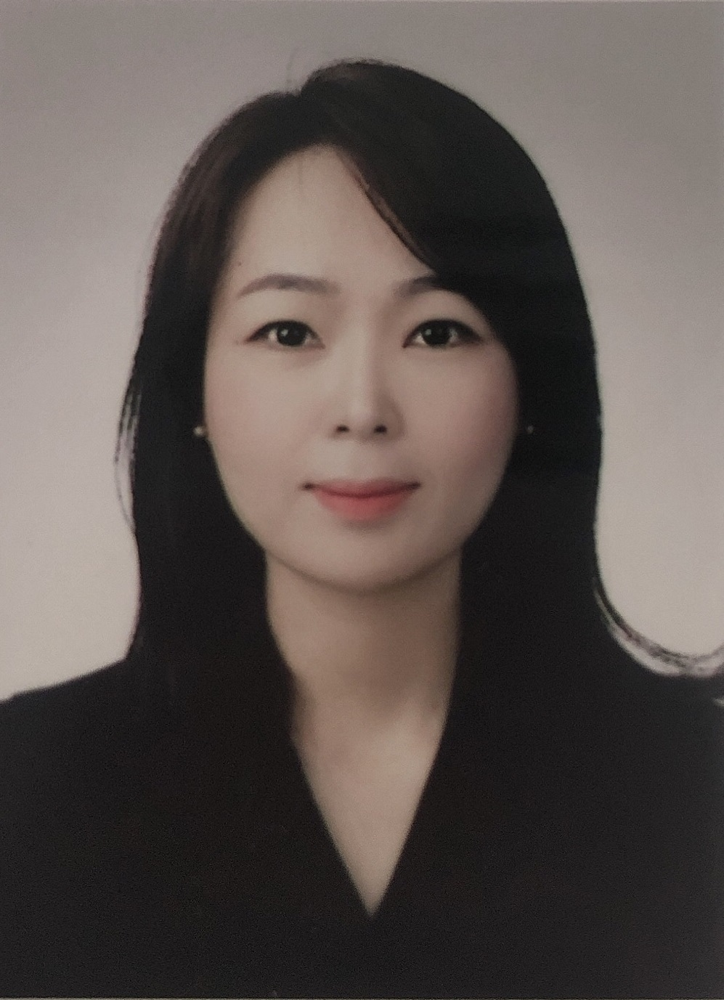
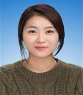
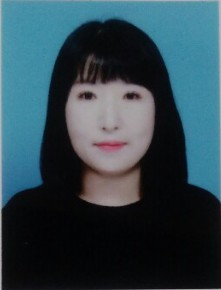
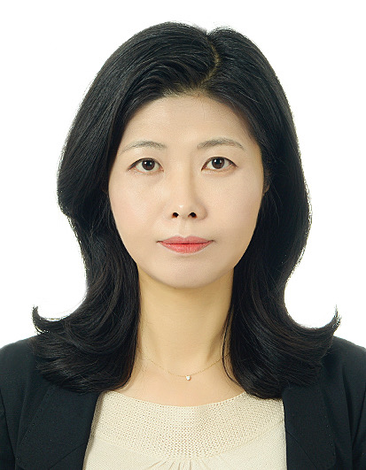
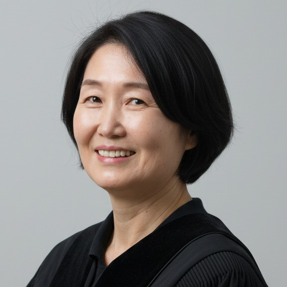
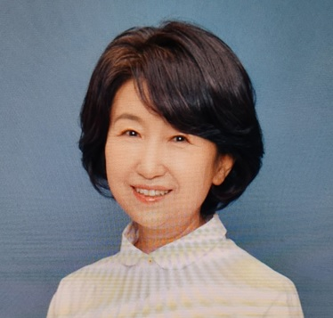

마음동네 상담사
한 분 한 분의 마음에 진심으로 귀 기울이고 따뜻함으로 동행하겠습니다.

김명숙 센터장
아동, 청소년, 성인, 가족, 부부상담, 심리치료, 심리평가, 심리상담 (한신대 일반대학원 임상 및 상담심리 박사수료)
자격
- 한국임상심리학회 공인 임상심리전문가
- 뇌교육사 1급
- 한국심리학회 공인 여성심리사 1급
- 한국인지행동치료학회 정회원
- 치매전문교육(한국임상심리학회)
- 재난정신건강교육 심리적 응급처치(국립정신건강센터 국가트라우마센터)
- DBT(변증법적행동치료 공부모임, 트라우마치유센터 사회적협동조합 사람마음)
- 한국도박문제관리센터 도박치유상담사 양성과정 수료
- 아동권리보장원 외 역량강화 교육
- 드라마치료 중급 및 비블리오 드라마 지도자 과정 수료
- 애니어그램 심화과정 수료(애니어그램심리연구소)
- 복합트라우마와 해리에 대한 이해 그리고 자아상태 치료의 시작 워크샵 수료
- 관계_가족세우기 워크샵
- 이마고 부부관계치료 워크샵
- CBT for Challenging Problems Workshop(Judith Beck)
- Coherence Therapy Workshop(C.R. Cloninger),TCI
- Brain spotting Phase1, 2, 3(Brain spotting Training Inc)
- EMDR W1, W2, 2.0 Training(EMDR KOREA)
현
- 마음동네 심리상담센터 센터장
- 마음동네 임상심리연구원장
- 한국여성심리학회 이사
- 한국임상심리학회 전문위원
- 발달장애인 공공후견 지원사업추진 위원회 정신건강 분야 추천위원
- 한국심리학회·한국상담심리학회·한국여성심리학회 정회원
- 아동권리보장원 상담사
- 인천가정법원 상담위원
전
- 중부지방해양경찰청 면접관
- 한국도박문제관리센터 도박치유상담사
- 수원시여성문화공간휴 상담팀장
- 인천지방경찰청 위촉 진술분석전문가
- 수원지방법원 지정 외부상담기관 전문상담사
- 한국임상심리학회 수련감독자
- 한국여성심리학회 논문심사위원
- 산업인력관리공단 임상심리사 수퍼바이저
- 균형심리학연구소 연구원
- 인천시 동부교육지원청 임상심리사
저서
- 균형심리이론과 치유기법, IBPI한국대인관계균형심리검사
수상경력
- 2022년 인천정신건강의 날 인천시장상 수상
- 2019년 수원시여성문화공간휴 공로패
- 2014년 한신대학교 대학원장상
특허
- 감정상태 분류를 통한 솔루션 제공 방법 제10-2322752호, 등록일자: 2021년 11월 1일
- 균형심리이론 기반 마음작업 서비스 제공 시스템 제10-2500073호, 등록일자: 2023년 2월 10일
논문
- 어머니의 기질과 우울 그리고 양육태도와 자녀성격과의 관계(2015. 김명숙, 오현숙. 한국심리학회지: 여성 20권 4호), KCI 등재
- 감정노동자의 심리적 스트레스 완화를 위한 인지행동치료 집단 프로그램 개발 및 효과성 평가-예비연구(2016. 이정은, 신재은, 김명숙, 조문한, 이인재. 대한스트레스학회: 스트레스연구24(1)), KCI 등재
- 비자살적 자해를 위한 단기 변증법적 행동치료의 적용 사례 예비연구 : 여자 대학생 사례를 중심으로 (2024. 김명숙, 강예령, 최유주, 구훈정. 한국심리학회지: 여성 29권 2호), KCI 후보

남상철 원장
아동·청소년·성인·가족·부부상담 및 심리치료, 중독 및 스트레스, EAP, 독서치료, 드라마치료
학력
- The Seattle School of Theology and Psychology, MAC
- Thunderbird Graduate School of International Business, MBA
- Agape Christian University, DREP Honoris causa
자격
- Northwest Family Life 가해자 상담가 과정 수료
- Birkman 인증 컨설턴트 과정 수료
- 한국심리학회 공인 여성심리사 1급 (제 9호)
- 뇌교육사 1급
- 균형심리상담전문가 수퍼바이저
- 균형심리독서치료 수퍼바이저
- 균형심리독서 지도사 과정, 갈등조율 리더십 과정 대표 강사
현
- 마음동네 심리상담센터 원장
- 균형심리학연구소 및 균형심리독서연구소 소장
- 모아기질애착연구소 소장
- 균형심리이론과 치유기법 개발
- 한국여성심리학회 이사
- 한국심리학회, 한국여성심리학회, 한국문화및사회문제심리학회 교수회원
- 서울시 강서양천교육지원청 교육활동보호지원단 자문위원
전
- Western Covenant University 상담대학원 교수
- 경영컨설팅 전문회사 Management Technologies International, Inc. 프로젝트 매니저, 조직 역량 개발 컨설턴트 역임
- 한국문화및사회문제심리학회 홍보이사
- 한국여성심리학회 홍보이사
- 서울시강서교육복지센터 자문위원
- 방송출연 SBS '우리아이가 달라졌어요', MBC '꾸러기밥상' 등
- 인천, 전북, 강원, 경기, 부산, 광주 교육청 및 제주 탐라교육연수원 균형심리이론과 치유기법 연수
- 무주, 군산, 진안, 진주, 익산, 김제 위센터 수퍼비전
저서
- 내 아이의 생명력을 키워주는 균형교육법
- 내 아이의 해석 능력을 키워주는 균형독서법
- 독서, 심리학을 만나다.
- 유기농육아
- 인성, 인간다움을 찾아서
- 균형심리이론과 치유 기법 등
수상경력
- 2019대한민국아름다운경영인 국회교육상임위원장상 대상 수상
특허
- 감정상태 분류를 통한 솔루션 제공 방법 제10-2322752호, 등록일자: 2021년 11월 1일
- 균형심리이론 기반 마음작업 서비스 제공 시스템 제10-2500073호, 등록일자: 2023년 2월 10일

천세경 상담사
청소년, 성인, 부부, 가족 상담(한세대 상담대학원 가족상담학 석사)
자격
- 분노조절상담사 1급(한국심리상담협회)
- 전문상담사 1급(한국기독상담심리치료학회)
- 전문상담사 2급(한국상담학회)
- 청소년상담사 3급(여성가족부)
- 사회복지사 2급(보건복지부)
- 미술심리상담사 2급(한국심성교육개발원)
- 진로지도상담사 2급(한국상담교육원)
- 가정폭력/성폭력 상담사(한국기독상담연구원)
- K-KSEG 이고그램전문강사(한국매체상담협회)
- 정신건강증진상담사 2급(한국상담진흥협회)
- 학습코칭 아카데미과정(연세대학교)
- 부부, 가족역동에 대한 이해과정(김영애 가족치료연구소)
- 사티어 부모역할, 의사소통훈련과정(김영애 가족치료연구소)
- 새중앙 상담센터 인턴/레지던트
전)
- 한세대 상담센터 상담사
- 인애가족 상담센터 상담사
- 새중앙 상담센터 상담사
- 고봉소년원 상담
- 가습기살균제 피해자 상담
- 김정희심리상담센터 상담사
현)
- 마음동네 심리상담센터 상담사

김유진 부원장
청소년, 성인심리상담, 부모교육, 영어상담(아주대 상담심리대학원 상담심리 박사수료)
자격
- 뇌교육사 1급
- 상담심리사 2급(한국상담심리학회)
- MBTI, MMTIC 전문가(MBTI연구소)
- STRONG 직업상담 전문가(ASSESTA)
- JTCI 전문가 (마음사랑)
- 학습클리닉검사(LETA) 전문가 (테스트온)
- 솔리언 또래상담 지도자 (한국청소년상담원)
미국
- Qualified Mental Health Professional-Child (Virginia Board of Counseling)
- Prepare Enrich Facilitator (PREPARE ENRICH)
- The Family Counseling Center of Greater Washington 상담사 (VA)
전)
- 동성중학교 진로집단상담강사
- 서울시청소년상담복지센터 상담사
- Westminster Theological Seminary, MAC (PA)
현)
- 마음동네 심리상담센터 상담사

송은미부원장
심리검사 및 심리평가 (이화여자대학교 대학원 발달 및 발달임상 석사)
자격
- 임상심리전문가(한국임상심리학회)
- 정신보건임상심리사 2급(보건복지부)
- 아이코리아 아이존 임상심리사 과정 수료
- 신촌 세브란스 병원 전문가 과정 수료
- 한국심리학회, 한국임상심리학회, 한국상담심리학회, 한국여성심리학회, 한국발달심리학회 정회원
전)
- BFC 학습연구소 임상심리사
- 민성원 연구소 임상심리사
- 해수 소중한 아이 정신과 임상심리사
- 파랑새 아이 연구소 임상심리사
- 김병후 정신과 임상심리사
- 키즈앤틴 학습발달클리닉 임상심리사
- 부천 기병원 임상심리사
- 임상심리사 슈퍼바이저
- 용문심리상담센터 상담원 인턴 수료
현)
- 마음동네심리상담센터 임상심리전문가
홍주학 부원장
청소년, 성인 심리상담, 인지행동치료 (독일 MUNSTER 대학 심리학 DIPOM-PSYCHOLOGE 졸업, 대구대학교 재활심리학 박사)
자격
- 임상심리전문가 (한국임상심리학회)
- 정신건강임상심리사 1급 (보건복지부)
- 상담심리사 1급 (주 수퍼바이저 자격, 한국상담심리학회)
- Psychologischer Psychotherapeut (Verhaltenstherapie)
- 한국상담심리학회 정회원
전)
- (주)위캔엘티디/위캔네트웍스 연구소장
- KRA 유캔센터 심리상담전문가
- 강동함소아한의원
현)
- 마음동네심리상담센터 심리상담사

전창순 부원장
아동,청소년,성인 심리상담, 미술치료 (백석대학교 교육대학원 미술치료학 석사)
자격
- 뇌교육사 1급
- 미술재활 발달재활서비스 제공인력 (보건복지부)
- 청소년상담사 2급(여성가족부)
- 임상심리사 2급(보건복지부)
- 상담심리지도사 1급 (전국대학상담학과협의회)
- 미술심리상담사 2급 (사단법인 국제민간자격 전문협의회)
- 음악심리지도사 1급 (한국원격교육진흥원)
- 사회복지사 2급 (보건복지부)
- 교원자격증 실기교사 (교육과학기술부 장관)
- 창의 인성교육 지도사 (한국직업능력개발원)
- 놀이심리상담사 1급 (한국심리상담협회)
- 가족심리상담사 1급 (한국심리상담협회)
전)
- 부천종합사회복지관 미술치료
- 부원초등학교 미술치료
- 늘해랑학교 집단미술치료
- 연세아동발달상담센터 미술치료
- 인천논현동종합복지관 노인미술치료
- 신광지역아동센터 미술치료
- 두드림상담소 사회성기술 집단미술치료
- 마포대진유치원 집단미술치료
- 부천시 여성개발센터 미담협동조합 미술상담사
- 원미중학교, 성주중학교 심성집단상담
- 부천중학교 학교폭력 집단상담, 심성집단상담, 진로집단상담
현)
- 마음동네 심리상담센터 상담사

김선미 상담사
청소년, 성인, 부부, 가족 심리상담 (단국대 일반대학원 상담학 박사수료)
자격
- 상담심리사 2급 (한국상담심리학회)
- 청소년상담사 2급(여성가족부)
전)
- 이지앤웰니스 협약상담사
- 서울시 청년활동지원센터 전문상담사
- 다솜힐링심리상담센터 심리상담사
현)
- 마음동네 심리상담센터 상담사
- 경기도 여성가족재단 아빠스쿨 전문상담사
이수연 상담사
아동청소년, 놀이치료, 성인심리상담(인하대학교 일반대학원 아동심리학 박사수료)
자격
- 상담심리사 2급 (한국상담심리학회)
- 모래놀이상담사 2급 (한국상담심리교육개발원)
- 한국심리학회 한국상담심리학회 한국놀이치료학회 정회원
- 한국장애인개발원 발달재활서비스 놀이심리재활 제공인력 자격
전)
- 인하대학교 아동발달센터 연구원
- 인천육아종합지원센터 「찾아가는 아이사랑」 육아 컨설팅 플래너
- 너나우리아동발달심리센터 놀이치료사
현)
- 마음동네 심리상담센터 상담사
논문
- 동성애 가족에 대한 대학생의 태도 연구(2023. 이수연, 양성은. 생활과학연구논총, 27권 3호) KCI등재

김애숙 상담사
서울신학대학교 상담심리학(박사)
자격
- 청소년 상담사 1급 (여성가족부)
- 임상심리사 1급 (보건복지부)
- 목회상담사 수련감독 (한국목회상담협회)
현)
- 마음동네심리상담센터 전문상담사
- 서울신학대학교 상담대학원 임상실습 교육분석가
- 한국목회상담협회 교육위원회 부위원장
전)
- 인천푸른나무심리센터 전문상담사
- 서울신학대학교 학생상담센터 전문상담사
- 도곡삼성정신건강의학과 전문상담사
논문
- 생기 있는 삶의 회복을 위한 '숨' 의 상호주체 정신분석

유진숙 상담사
아동·청소년·성인·가족·부부상담 및 심리치료, 중독 및 스트레스, EAP, 독서치료, 드라마치료 (Western Covenant University 상담대학원 박사)
자격
- 국제공인부모아동상호작용치료사 (미국PCIT INTERNATIONAL)
- 성중독심리상담사 1급
- 미술놀이심리상담사1급 수련감독전문가(미술놀이치료학회)
- AP(미국) 부모교육 전문강사
- 상담전문가 1급(한국청소년학회)
- 난독증 임상전문지도사(대한난독증학회)
전)
- 치유상담대학원대학교 전인치유학과 석사
- 국제뇌교육대학원대학교 뇌교육학과 박사
- 성북청소년수련관 상담실장
- 법무부산하 성남시 보호관찰위원
- 뇌기반열린학습 심리상담센터 아동심리센터장
현)
- 마음동네심리상담센터 심리상담사
- 한국청소년한마음연맹이사
황호춘 상담사
부부·가족치료, 감수성훈련, 인간관계, 커뮤니케이션(서울불교대학원 상담심리학 석사, 성산효대학원 가족상담학과 박사)
자격
- 상담심리사 2급(한국상담심리학회)
- 가족상담전문가 1급(한국가족상담협회)
- 사티어부부 가족치료전문가 1급(사티어연구소)
- 인간관계촉진전문가 1급(한국인성개발연구원)
- 한국상담심리학회 정회원
전)
- 사)한국인성개발연구원 맑은샘 심리상담연구소
- 저서: 감수성 훈련의 실제(공저, 한알출판사)
현)
- 마음동네심리상담센터 심리상담사